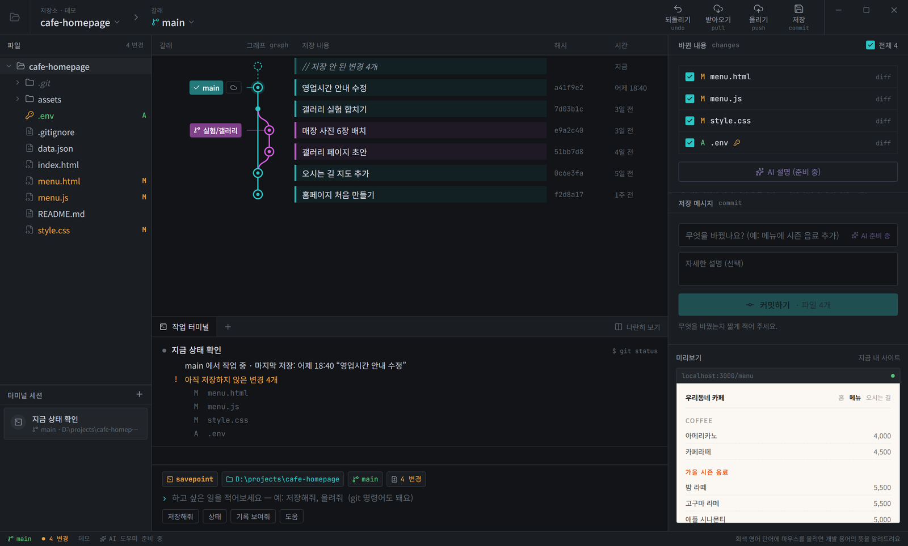

AI로 프로그램을 만드는 사람이 늘었지만, AI가 코드를 망가뜨렸을 때 되돌리는 방법을 모르고
.env를 실수로 올리고 충돌 기호 앞에서 막힙니다.
그래서 목표를 「Git을 쉽게 쓰는 도구」가 아니라
「Git을 몰라도 코드를 잃지 않는 도구」로 잡았습니다.
혼자 만들고 있고, 지금도 계속 붙이고 있습니다.
GitHub Desktop · Sourcetree · GitKraken 모두 좋은 도구지만, 화면에 commit · push · merge · conflict가 그대로 적혀 있습니다. 용어를 이미 아는 사람이 빠르게 쓰도록 만들어진 도구입니다.
제가 겨냥한 사람은 다릅니다. AI에게 코드를 맡기고 결과만 확인하는 사람은 속도가 아니라 안전이 필요합니다. 되돌릴 수 있는지, 비밀 키가 올라가지 않는지, 충돌이 나도 원래대로 돌아오는지가 먼저입니다.
commit · 올리기 push · 받아오기 pull.
마우스를 올리면 뜻이 뜹니다. 용어를 숨기지 않고 같이 가르치는 쪽을 골랐습니다.

.env에 열쇠 표시가 붙어 있습니다.
아래 터미널은 실행된 git 명령을 그대로 보여 줍니다 —
무엇을 대신 해 줬는지 감추지 않습니다.
🔗 설치 없이 바로 써 보실 수 있습니다 — chlgks2.github.io/Git_hani 에 같은 화면을 데모 모드로 올려 두었습니다. 저장·올리기 / 되돌리기 / 충돌 세 가지 과제가 있습니다.
reset으로 만들지 않았습니다
되돌리기는 이 앱에서 가장 많이 쓰일 기능이고, 가장 위험한 기능입니다.
흔한 구현은 git reset --hard지만 그러면 기록이 사라지고,
이미 올린 저장소라면 다음 올리기가 거절됩니다.
Git을 모르는 사람이 그 상황을 풀 수 없습니다.
.gitignore에 있는 파일은 그대로 둡니다.gitignore가 생기기 전 시점으로 되돌리면 .env가 지워졌습니다.
새 파일 정리(git clean)를 되돌린 뒤에 실행해서,
그 시점 기준으로는 .env가 무시 대상이 아니었기 때문입니다.| 장치 | 무엇을 막는가 |
|---|---|
| 비밀 파일 기본 제외 | .env · 개인 키 · credentials.json 은 체크를 빼 두고, 포함하려 하면 경고합니다. 올리기 직전에 한 번 더 확인합니다 |
| 받아오기 충돌 시 자동 취소 | merge --abort로 원래 상태까지 되돌립니다. 「합치다 만」 상태로 두지 않습니다. 해결은 사용자가 원할 때 시작합니다 |
| 충돌 기호가 남으면 저장 거절 | <<<<<<<가 남은 채 커밋되는 것을 막습니다 |
| 큰 파일 경고 | 50MB에서 경고하고, 100MB를 넘으면 GitHub이 받지 않는다고 미리 알립니다 |
| 저장 안 한 변경과 겹치면 중단 | 받아오기가 작업을 덮어쓸 상황이면 아무것도 바꾸지 않고 먼저 커밋하라고 안내합니다 |
팀 작업에서 초보자가 가장 크게 막히는 지점입니다.
파일을 열면 <<<<<<< ======= >>>>>>>가 섞여 있고,
무엇을 지워야 하는지 알 수 없습니다.
이걸 「내 것 / 온라인 것」 카드 두 장으로 나란히 보여 주고 [내 것] [온라인 것] [둘 다] 버튼으로 고르게 했습니다. 한쪽에서 지운 파일이나 이미지는 파일 전체를 고르게 합니다. 「원래 Git 표시 보기」를 누르면 기호의 의미도 함께 설명합니다.
ResolverBackend)로 분리했습니다.
실제 저장소(git 명령)와 웹 데모(준비된 데이터)가 같은 화면을 그대로 공유합니다.
데모에서 고친 것이 실제 앱에도 바로 반영됩니다.
웹으로 만들지 데스크톱으로 만들지부터 정해야 했습니다. 사용자의 폴더와 PC에 설치된 git을 직접 다뤄야 하므로 웹은 불가능했고, 남은 것은 Electron · Tauri · Wails · Qt · Python 이었습니다.
| 기준 | 결과 |
|---|---|
| 설치 크기 · 메모리 | Tauri — 실행 파일 약 10MB. Electron은 브라우저를 통째로 포함합니다 |
| 권한 관리 | Tauri — 화면이 쓸 수 있는 기능을 폴더 선택·링크 열기로 제한했습니다 |
| 안정판 여부 | Wails는 당시 기준에서 제외 |
| 서버 프레임워크 | NestJS — 화면과 같은 TypeScript라 타입을 공유합니다 |
Rust는 처음이었습니다. 그래서 역할을 나눴습니다 — Rust는 git 실행과 출력 해석만 맡고, 화면 로직은 전부 TypeScript에 두었습니다. 배우는 부담을 한쪽에 몰지 않으려는 선택이었습니다.
| 다룬 것 | 왜 필요했나 |
|---|---|
git status --porcelain=v1 -z |
NUL로 끊어 읽어 공백·한글 파일명과 이름 바뀐 파일의 원래 이름까지 안전하게 처리합니다 |
git log 제어 문자 구분 |
커밋 메시지에 어떤 글자가 들어 있어도 깨지지 않게 %x1f · %x1e로 끊습니다 |
CREATE_NO_WINDOW |
Windows에서 git을 부를 때마다 검은 콘솔 창이 깜빡이는 것을 막습니다 |
GIT_TERMINAL_PROMPT=0 |
git이 터미널에서 비밀번호를 기다리면 앱이 그대로 멈춥니다. 아예 묻지 않게 하고 앱이 안내합니다 |
spawn_blocking |
push처럼 오래 걸리는 작업 중에도 창이 멈추지 않도록 별도 스레드에서 실행합니다 |
사용자 입력이 git 옵션으로 해석되지 않도록 --로 끊고 값을 검사합니다 —
해시는 16진수만, 주소는 https://와 git@만 받습니다.
저장소 밖 경로(.. · 절대 경로)도 막습니다.
커밋하지 않아도 그 순간을 남겨 두는 시간 기록(스냅샷) 기능입니다. 자동으로 찍어 주면 좋겠지만, 얼마나 느리고 얼마나 쌓이는지 모르는 채로 자동화하면 사용자 디스크를 망가뜨립니다. 그래서 수동 버전을 먼저 만들고 측정했습니다.
| 측정 | 원인 | 결과 |
|---|---|---|
| 스냅샷 1번에 1.1초, 쌓일수록 느려짐 | 찍을 때마다 기존 목록 전체를 다시 계산 (Windows는 git 실행 1번에 수십 ms) | 직전 하나만 확인하도록 바꿔 0.3초로, 쌓여도 일정 |
| 보통 프로젝트 1번당 11KB | — | 바이너리가 섞이면 1번에 5MB까지 늘어나는 것을 확인 → 10MB 이상 파일은 찍지 않음 |
GitHub Actions로 Rust 테스트를 Windows · macOS · Linux 세 곳에서 돌리게 한 직후, Linux에서만 실패하는 버그가 잡혔습니다. 로컬에서는 세 번에 한 번 정도만 보이던 것이었습니다.
| 증상 | 원인 | 고친 방법 |
|---|---|---|
| 스냅샷 순서가 뒤섞임 | 초 단위로 정렬해서, 같은 1초 안에 찍은 것들의 순서가 해시 값에 따라 달라짐 | 이름을 밀리초 시각(자릿수 고정)으로 만들어 이름 순 정렬. 연속 5번 찍기 테스트를 추가 |
CI에서 npm ci 실패 |
CI의 Node 22(npm 10)가 npm 11로 만든 lockfile을 거부 | 로컬에서 npm 10으로 재현해 확인한 뒤, CI와 배포를 개발 환경과 같은 Node 24로 통일 |
| Windows에서만 문자열 비교 실패 | PC의 core.autocrlf 설정으로 줄바꿈이 CRLF로 바뀜 |
테스트 저장소마다 autocrlf=false 고정, 파서는 CRLF를 보존하도록 별도 테스트 |
| 문제 | 해결 |
|---|---|
| 데스크톱 앱(Tauri)은 브라우저 자동화가 안 됩니다 | WebView2 원격 디버깅으로 실제 앱을 조작했습니다. 폴더 선택 창을 거치지 않도록 「실행 인자로 폴더 열기」 기능을 만들어 테스트에 썼습니다 |
| 테스트가 개발 PC의 Git 설정을 바꿀 위험 | GIT_CONFIG_GLOBAL로 테스트 전용 설정 파일을 쓰고, 로그인 창은 GCM_INTERACTIVE=never로 막았습니다 |
| 실제 협업 상황을 재현해야 함 | 임시 저장소 + 가짜 온라인 저장소(bare repo) + 「팀원」 저장소를 만들어 커밋·푸시·거절·받아오기·충돌·되돌리기를 실제 git으로 돌립니다 |
| 한계 | 내용 |
|---|---|
| AI 기능은 꺼 둔 상태 | 서버(NestJS)는 완성했고 테스트도 있지만, 앱에서는 기능 스위치(AI_ENABLED)로 비활성화해 두었습니다. 화면에 「준비 중」으로 표시됩니다 |
| 실사용자 없음 | 혼자 만들고 있고 아직 외부 사용자 테스트를 하지 않았습니다. 웹 데모에 과제별 소요 시간과 선택을 기록하는 장치만 넣어 둔 상태입니다 |
| 배포 전 | git 내장 · 자동 업데이트 · 코드 서명 · macOS 배포가 모두 남아 있습니다. 지금은 직접 빌드해야 씁니다 |
| 비밀 정보 검사는 이름 기준 | 파일 이름 패턴으로만 판별합니다. 내용 기반 검사(키 문자열 탐지)는 다음 계획입니다 |
| Rust 경험이 짧습니다 | 이 프로젝트가 첫 Rust입니다. 그래서 Rust의 역할을 git 실행과 해석으로 좁혔습니다 |
비개발자용 Git 도구에서 가장 큰 실패는 사용자 코드를 잃는 것입니다. 그래서 되돌리기·충돌·스냅샷 모두 「실패해도 원래대로」를 먼저 정하고 테스트로 고정했습니다. 공구한에서 환불 중복을 애플리케이션 코드가 아니라 DB 제약으로 막은 것과 같은 판단입니다.
자동 스냅샷을 바로 만들지 않고 수동 버전으로 시간과 디스크를 잰 뒤 규칙을 정했습니다. Emour에서 모델을 고치기 전에 평가 체계가 맞는지부터 확인한 것과 같은 순서입니다.